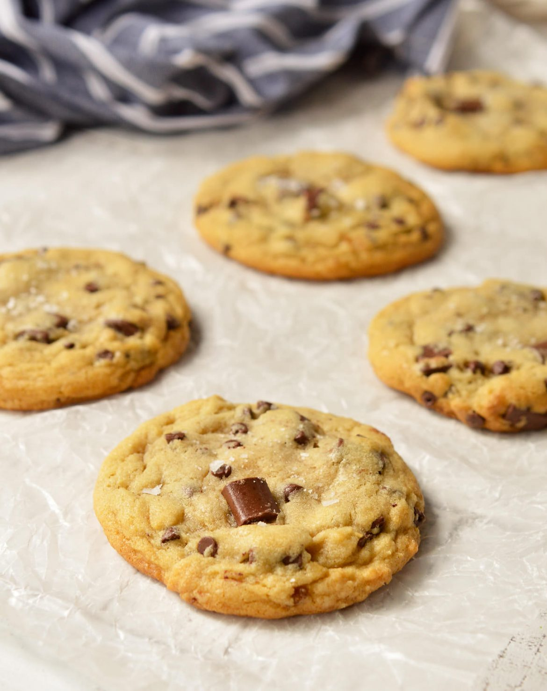

How to Bake Delectable Chocolate Chip Cookies

Melt-in-your-mouth good :p
Honestly, I stole this from my friend. She's a much better baker than I am. What can I say, I know what I know
and I know what I don't. The former is two coffee drinks and the latter is, well, everything else.
Enough dawdling. You're gonna love this one.
Ingredients:
- 1 cup butter
- 3/4 cup white sugar
- 3/4 cup brown sugar
- 2 eggs
- 1 tsp vanilla
- 1 tsp salt
- 2 1/4 cup flour
- 1 tsp baking soda
- 2 cups chocolate chips
Instructions:
- Cream butter and sugar
- Add eggs
- Add everything else
- Add chocolate chips
- Bake at 375 until done
- Eat them quickly! They're best soft :3
- They're also super good even when they're a couple days old. (Source: me)
- Additionally: Add table salt on top for cosmetics!
Return to Homepage